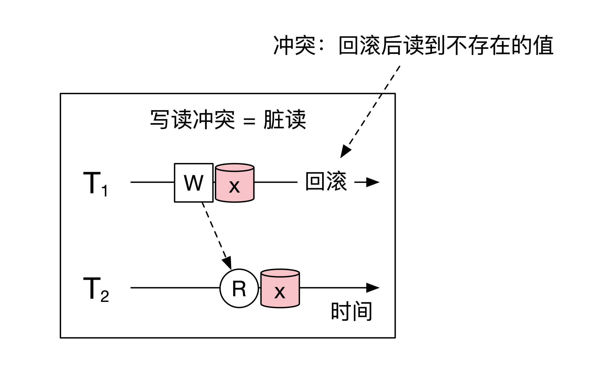
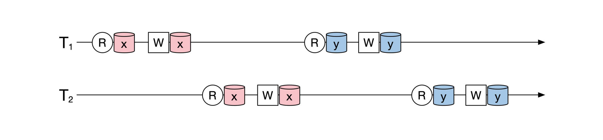

- 00 开篇词 如何成为金融级人才？.md.html
- 01 业务初探：扫了二维码之后发生了什么？.md.html
- 02 原理解读：如何理解第三方支付的业务逻辑和系统组件？.md.html
- 03 产品大观：不同金融业务都有哪些技术实现要点？.md.html
- 04 领域驱动设计（上）：如何设计金融软件顶层架构？.md.html
- 05 领域驱动设计（下）：如何设计统一的金融业务模型？.md.html
- 06 计算输入的正确性：怎么选择正确时间的数据？.md.html
- 07 计算过程的正确性：如何设计正确的数据处理架构？.md.html
- 08 计算结果的正确性：怎么保证计算结果是正确的？.md.html
- 09 数据传输的质量：金融业务对数据传输有什么要求？.md.html
- 10 数据存储的合理性：金融业务可以不用关系型数据库吗？.md.html
- 11 系统优化：如何让金融系统运行得更快？.md.html
- 12 正确性分级（上）：单机无备份有哪几种不同的一致性？.md.html
- 13 正确性分级（中）：多机无容灾有哪几种不同的一致性实现？.md.html
- 14 正确性分级（下）：多机有容灾有哪几种不同的一致性？.md.html
- 15 分布式正确性的存在性（上）：什么情况下不存在分布式共识算法？.md.html
- 16 分布式一致性（下）：怎么理解最简单的分布式一致性算法？.md.html
- 17 正确性案例（上）：如何实现分布式的事件溯源架构？.md.html
- 18 正确性案例（中）：常见分布式数据方案的设计原理是什么？.md.html
- 19 正确性案例（下）：如何在运行时进行数据系统的动态分库？.md.html
- 20 容灾（上）如何实现正确的跨机房实时容灾？.md.html
- 21 容灾（下）：如何通过混沌工程提高系统稳定性？.md.html
- 春节策划第1期 分布式金融系统知识，你掌握了多少？.md.html
- 春节策划第2期 读书如抽丝，为你推荐一些我读过的好书.md.html
- 春节策划第3期 如何运用架构知识解读春运买票和手游案例？.md.html
- 答疑集锦（一） 思考题解析与外汇架构知识拓展.md.html
- 答疑集锦（三） 思考题解析与数据库底层实现.md.html
- 答疑集锦（二） 思考题解析与账务系统优化.md.html
- 结束语 金融之道，与你同行，虽远尤欣.md.html
- 捐赠
12 正确性分级（上）：单机无备份有哪几种不同的一致性？
你好，我是任杰。从今天开始，我们进入到最后一个模块：分布式正确性及高可用。
在前面两个模块里，我们一起学习了金融业务，以及如何实现正确的金融系统架构。不过我们前面所讲的正确性，主要侧重点是金融业务实现的正确性。但是这些正确性还远远不够，你原来正确的代码运行在多线程或者分布式环境下，依然有可能出错。
所以，这一个模块我们主要探讨的内容是如何保证与业务无关的正确性。按照从简单到复杂的顺序，我们先来看看单机情况下会出现哪些不正确的情况。
冲突
如果一个东西永远都不会变，那么我们在使用它的时候一定不会出错，这就是我们在第8节课说过的函数式编程优势。
可惜现实并不完美，程序的状态还是会被修改。如果多个人在没有良好沟通的情况下独自修改状态，这样就可能会出错，而这种错误就叫冲突。
当然了，这么定义太过于模糊，我们还需要对冲突做准确的定义。为了方便后面做分析，我们先对要研究的问题做一些假设。
我们假设机器上存在着一些共享资源，用 x 、 y 、 z 表示，对这些资源有读和写两种操作，用 R 和 W 来表示。对资源的读操作不会改变资源的状态，但是写操作会改变。
有很多人会对这些资源做读或者写的操作。每个人的操作叫作事务，我们用 T来表示。所以一个事务T里会有一系列读写操作。下面是一个时序图，展示了两个事务随着时间推移的情况：
需要注意的是，事务在运行到一半或者结束后，可以选择保留所有操作的影响，或者取消所有操作的影响，对应的术语是事务的提交和回滚。由于提交和回滚不会影响我们接下来的分析，这节课里我们会省略这一步。
定义好了资源、操作和事务之后，我们再来看看前面说的冲突。
如果两个操作对应的是不同的对象，那么这两个操作不会有任何冲突。所以两个操作如果要有冲突，一定是它们操作了同一个对象。另外，如果两个操作都是读操作，也不会出现任何冲突。
所以我们可以这样理解冲突，两个操作如果冲突，一定有一个操作是写操作；发生冲突的时候，一定是一个操作先发生，另一个后发生（我们称后面的操作依赖于前面的操作）。
我们可以用排列组合算一算。有两个操作，每个操作都有读和写两种情况，一共就有4种情况。现在排除两个操作都是读的情况，就只剩下了3个情况，分别是读写、写读和写写这三种。
下面这幅图给你展示了这3种冲突类型和操作之间的操作关系：
隔离级别分类
现在很多数据系统在加上了一定的正确性保障之后，会宣称自己支持了事务。你也许会觉得这个事务，就是平时在使用关系型数据库时最高的正确性保障。其实不是这样，事务也分很多种不同的正确性级别，就算是同一个名字，也有可能意味着不同的东西，你一定要多加小心。
我们接下来就一起看看都有哪些正确性的级别。
当我们定义好冲突之后就可以看看都有哪些不正确了。在数据库理论里对不正确的分级叫作隔离级别（Isolation Level）。
有关隔离级别的经典论文是1995年发表的”A Critique of ANSI SQL Isolation Levels”。这篇论文抨击了当时SQL标准的事务，指出了这个标准不够完备，又提出了隐含的假设。论文对隔离级别做了详细的定义和梳理，你有兴趣可以仔细去研究。
这里我们主要了解一些常用的隔离级别，重点是最后的可串行化和MVCC。
最低的隔离级别 Read Uncommitted 解决了脏写（Dirty Write）的问题。脏写指的是两个事务写了同一份资源，这样后写的事务会覆盖先写的内容。其实脏写就是上面提到的写写冲突，示意图如下：-
稍微高一级的隔离级别叫 Read Committed。这个隔离级别除了解决脏写问题以外，还解决了脏读（Dirty Read）问题。
脏读指的是当一个未结束的事务写了一个值之后，另一个事务读取了这个值。一旦前面的事务通过回滚取消了自己的所有操作，那么后面的事务就会读取到一个不应该存在的值，也就是读了一份脏数据。
其实脏读就是我们在上面提到的写读冲突。示意图如下：

再高一级的隔离级别是 Repeatable Read。它相对于前一个级别也多解决了一个模糊读（Fuzzy Read）的问题，其实就是前面提到的读写冲突。
读写冲突和写读冲突刚好相反。读写冲突发生的时候需要负责写的事务提交，而写读冲突需要写的事务回滚。那为什么要叫这个名字呢？
原因是读的事务如果再读一次的话，会将另一个事务写入的值读回来，因此前后两次读到的结果会不一致。示意图如下：
隔离级别最高的是可串行化（Serializability）。它解决了两个事务之间的所有冲突。我会在后面详细讲解可串行化。
在这里我把所有介绍过的隔离级别的层级关系画出来，结果就是下面这幅图：
可串行化（Serializability）
事务可串行化基本上能解决所有的冲突。因此在多个事务在同时操作数据库的时候，我们都会要求事务具有可串行化的属性，这样就能避免出现错误的结果。那到底要怎么理解可串行化呢？
如何理解可串行化？
你如果用过关系型数据库的话，应该知道多个事务是可以并发执行的，这样数据库就能有效利用CPU和存储设备。
可串行化规定了这些同时在运行的事务的结果，它要求这些并发执行的事务的最终结果永远等同于它们某个顺序执行的结果。
这个定义比较拗口，让我们来逐一分解。首先，我们看看什么叫“顺序执行”。比如下面的图上有两个事务，这两个事务交互地读写 x 和 y ：

这时候我可以调整这两个事务的读写操作，把第一个事务里所有的操作都放到第二个事务的前面，就像下面这幅图展示的一样：
当我们调整了这两个事务的操作之后，第一个事务所有的操作会在第二个事务开始前全部结束，这两个事务在时间上没有任何的重合。这时候这两个事务就是顺序执行。
那什么叫“永远等于”呢？你可以再看看上面这幅图，就会发现我们调整了事务的执行顺序之后，最后的读写结果和调整前完全一样。这就是“等于”的定义，我们的调整不改变结果。“永远”意味着对于任何 x 和 y 的初始值，调整之后的结果都相等。
注意，我们在可串行化中还有一个关键的定语是“某个”。这意味着我们只要找到一个等价的顺序执行结果就可以，这个结果不一定唯一。这也说明可串行化也具有一定的随机性，我在第14节课里会说到严格可串行化（Strict Serializability）的隔离级别，它可以消除这种不确定性。
那为什么可串行化这么重要呢？这是因为一旦多个事务可以被串行化，我们就可以当作这些事务是一个一个分开执行，每个事务会成为一个原子的单元。
在没有其他事务的干扰下，我们很容易就能知道每个事务执行的结果是不是正确的。所以可串行化相当于把一个大的正确性问题，分解成了以事务为单位的小正确性问题，通过分而治之的办法来降低正确性成本。
如何理解冲突可串行化？
除了前面说的可串行化，我们通常使用的关系型数据库用的是另一种叫作冲突可串行化（Conflict Serializability）的调度方案。
这里的“冲突”就是我们开始提到的读写、写读和写写这3种冲突。冲突可串行化依然要求等价于某个事务串行化的结果。
但是它和可串行化不一样，可串行化只需要你找到一个等价的串行结果就行，而冲突可串行化要求你通过一系列无冲突的互换过程将原来的执行序列变为等价的串行执行。
如果两个操作之间没有冲突，你可以互换他们的顺序，也叫无冲突互换过程。所以一共有两种情况。一种是两个操作的对象不一样，这样不管是读写都不会有冲突，你可以随便调整。另一种情况是两个操作都是读操作。
下面这幅图展示了我们怎么通过调整顺序来证明冲突可串行化。还是之前的例子，我们看看这两个事务的中间两个操作。这两个操作的对象不一样，所以没有冲突，我们可以调整它们俩的顺序。一共调整4步，我们就可以从最开始的情况调整为最后的可串行化结果。
冲突可串行化的局限
那我们怎么来理解可串行化和冲突可串行化的关系呢？准确来说，冲突可串行化是可串行化的充分条件：如果一个事务是冲突可串行化，那么它一定是可串行化。反过来，如果一个事务是可串行化，那它可能不是冲突可串行化。
所以冲突可串行化的集合是可串行化的子集，就像下面这幅图展示的一样：
我们还是来举个例子。系统中有3个事务，它们的操作之间的时间关系如下图：
你如果仔细分析一下就会发现，上面这3个事务是可以被串行化的，就像下面这幅图展示的一样：
但是你无法通过无冲突互换的过程，将这3个事务的执行顺序变为串行化的结果。原因是中间两个对 x 的写操作导致 T1 和 T2 无法调整为串行执行，就像下面这幅图解释的一样：
如何通过2PL解决冲突可串行化？
虽然我们有两种不同的串行化的定义，其实我们真正需要的是可串行化，而不是冲突可串行化。那为什么还要提冲突可串行化呢？
这是因为在数据库的实现过程中，一般会通过锁的方式调整事务执行顺序，而用锁的方式一般能实现冲突可串行化。
锁（Lock）在这里是排它锁，表示一旦你锁住了某个共享资源，其他人都无法访问，直到你释放这个锁。
通过锁来实现可序列化的方式叫作2PL（Two Phase Lock）。请注意2PL和2PC（Two Phase Commit）不一样，什么是2PC我们下节课再讲。
2PL的过程很简单，它要求对于任何一个事务，这个事务会先对所有访问的资源加锁，然后再访问所有资源，最后再释放所有的锁，加锁和解锁的过程不能有交替。
我们用 L 来表示加锁， U 来表示解锁。下面这张图展示了一个事务在2PL的情况下的加锁解锁过程：
为什么2PL可以实现冲突可串行化呢？接下来我们一起证明一下。证明的过程其实就是冲突可串行化的无冲突操作互换过程。
假设系统中有很多事务都遵循着2PL在运行。我们选择所有这些事务中最早释放第一个锁的事务。下面我们来证明，通过无冲突操作的互换过程，可以将这个事务的所有操作放在最早执行。
假设所有事务中第一个释放锁的是第一个事务 T1 ，释放的锁是 z 。和它冲突的是第二个事务，冲突在 x 。那有没有可能出现下面这幅图的情况呢？

答案是不可能。因为按照2PL的要求，每个事务在访问 x 之前，都需要对 x 上锁。由于锁之间是互斥的，后面的事务想要成功对x 加锁，需要前面的事务先释放锁。
所以，按照上面的时序图， T1 需要先释放对 x 的锁，然后 T2 对 x 加锁，像下面这幅图展示的一样：
这样我们就推断出 T1 需要先释放对 x 的锁 ，然后释放对 z 的锁，这与我们最开始假设所有事务最早释放的是 z 的锁矛盾。
所以，在第一个事务释放第一个锁之前，它和其他所有的事务的所有操作都没有冲突，因此可以通过无冲突操作互换的过程，将第一个事务的所有操作提前到其他事务之前。这样，我们就可以把第一个事务和剩下的事务独立开来。
接下来，我们可以用同样的操作把剩下的事务一个一个向前调整，最终把所有事务分解为串行化的执行过程。
在证明过程中我们利用了操作之间的冲突，以及用锁来解决冲突，因此最后的串行化结果其实是冲突可串行化。
2PL局限性
2PL是一个理论上很美好的结论，但是在实践过程中用得不多。
这是因为2PL要求我们提前知道所有访问的数据都有哪些，这样才能在解锁前锁住所有内容。我们一旦释放了任何一个锁，就不能再新增其他锁住的资源，这就是2PL的局限性。
幸运的是，我们还有另一种隔离级别。它比冲突可串行化弱一些，但是实现起来特别方便，运行速度也比较快，它就是快照隔离（Snapshot Isolation）。
如何理解快照隔离（Snapshot Isolation）？
快照隔离的核心思路是在一个事务开始的时候给当前所有正确的数据打一个快照（Snapshot）。
这个快照一旦生成就不会改变，所以事务在运行的时候不会被其他事务干扰，也不会出现因加锁导致的等待，就会运行得很快。所以快照隔离的优点是，不同事务之间的读写互不干扰。
快照隔离的优势在于，它放弃了一些可序列化的能力来换取事务执行的速度，同时不同事务之间的读写无冲突，比较适合需要运行时间特别长的事务。
因为快照隔离有很多优势，所以它是现在很多数据系统默认支持的隔离级别。当你听到一个新的数据系统支持了事务，首先要想到它支持的是不是快照隔离这个隔离级别。
这里需要提醒你的是对正确数据的定义。快照不能包含当前所有数据，因为有可能有进行到一半的事务已经修改了一部分数据。所以，我们需要把所有还没有完成的事务所对应的数据都排除在快照之外。
说完核心思路之后，我们还是要讲一下实现。因为理解了实现。你才能更深入地理解快照隔离究竟做了什么。
另外，在一些情况下，你也可能需要自己给一些数据系统加上事务能力，这时候快照隔离就是默认选项。
MVCC
快照隔离一般用 MVCC（Multi-Version Concurrency Control）来实现，实现的方法也多半参考PostgreSQL的经典实现。
我们先看看MVCC的存储。存储有一个特点是数据只会增加，不会修改。所以它和我们第7节课讲的事件溯源存储很类似。
因为数据库的数据会被删除，这些要被删除的数据并不会马上从数据库删掉，而是会打一个删除的标签。当确认没有任何人使用之后再择机删掉，这一点和Java里的垃圾回收器很像。
其实，在实现的时候，真的会有一个垃圾回收器，它会定期回收这些不可能再被访问的数据。
如果你要修改数据的话，修改的操作会被分解为删除和新增这两个操作，因此你对数据的修改也不会改变原来的数据，只会增加数据的版本，这也是MVCC里Multi-Version的由来。
接着我们再看看事务开始的时候应该做什么。
前面讲快照隔离时说过，快照需要包含正确的数据，所以事务在开始的时候，我们需要找到哪些事务是合理的，这些合理的事务就包含了正确的数据。
按照时间来划分，所有事务一共分为3大类：
1.已经全部完成的事务，比如已经提交或者回滚。- 2.正在进行中的事务。- 3.还没有开始的事务。
所以我们需要选择已经完成的事务，同时忽略正在进行中或者还没有开始的事务。
你可能有个疑问，为什么我们需要忽略还没有开始的事务呢？这是因为当事务开始运行之后，还会有新的事务会陆陆续续进来，这些新来的事务对应的数据不应该包含在快照之内，所以也需要排除。
下面这幅图解释了，如何根据事务开始时间来选择快照应该包含哪些数据：
最后，我们再来看看怎么生成快照？其实快照只是个逻辑的概念，我们并没有真正把数据拷贝出来作为快照。快照的生成实际是通过修改查询语句实现的。
数据库的每个数据都会增加一个隐藏列，里面记录了是哪个事务对数据做了修改。
当你查询数据的时候，数据库会在你的查询语句里自动增加与正确性相关的查询条件，要求返回数据的隐藏列里只能包含正确的事务。
总结一下MVCC的架构设计思路。它通过多版本将数据变为了只读状态，从而在查询数据的时候，可以通过事务的开始时间来判断应该使用哪些数据的版本。
这个架构属于一个叫做只读架构（Immutable Architecture）的设计思想，第7节课提到的事件溯源也属于这个大的架构类型。
到这里，常见的一致性分类我们就讲完了。下面这幅图是对前面重点内容的一个总结：
小结
这节课我给你介绍了在单机情况下，事务都有哪些隔离级别。
首先，我们定义了什么是冲突。冲突有读写、写读和写写这三种类型。
然后，我们学习了事务的隔离级别。最低级的是Read Uncommitted，它解决了写写冲突。
高一级的是Read Commit，它解决了写写和写读冲突这两种。再高一级是Repeatable Read，它解决了写写、写读和读写这三种冲突。级别最高的是可串行化，它解决了两个事务之间的所有冲突。
我们日常使用中还有一个级别是快照隔离。快照隔离比Read Committed级别要高，但是比可串行化要低。
接下来，我们一起分析了可串行化的定义，以及它和冲突可串行化的区别。我们日常使用的可串行化是冲突可串行化，一般用2PL来实现。冲突可串行化要求事务提前知道自己要用到哪些数据，因此对使用场景有一些限制。
快照隔离基本上是最常用的隔离级别。它的核心思路是在事务开始前给所有数据打一个快照，这样事务之间就不会干扰，所以执行速度快。
我们一般用MVCC的方法来实现快照隔离。在MVCC里，数据的修改会创建新的版本，因此数据都是在只读状态。事务在刚开始的时候需要查询到有哪些事务已经成功结束，然后根据这些已经结束的事务来选择数据的正确版本。
思考题
快照隔离虽然比可串行化的级别要低一些，但我们稍做调整就可以达到可串行化的能力，这个做法叫作串行化快照隔离（SSI，Serializable Snapshot Isolation）。
SSI主要需要解决的是事务的回滚。2PL是一种用悲观的态度实现的可串行化，它假设事情会出问题，因此提前用锁的方式避免问题发生。
SSI则是一种乐观的态度。它假设事情不会出问题，大家都很开心地运行下去。当事务要提交的时候才检查是不是可以提交，如果不可以就回滚。
如果事务之间的冲突特别小，那么SSI能显著增加系统性能。但是当事务之间冲突很频繁的时候，SSI会导致事务在运行很久之后才会被回滚，这样会浪费资源，效果不好。所以SSI是一种在系统压力不大情况下的良好选择。
SSI主要需要检查的是读写和写读冲突，像下面这幅图展示的一样。那你怎么才能正确地找到这些冲突呢？
欢迎你在留言区记录你的思考或者疑问。如果这节课对你有帮助，也欢迎你分享给同事、朋友，和他共同进步。
© 2019 - 2023 Liangliang Lee. Powered by gin and hexo-theme-book.